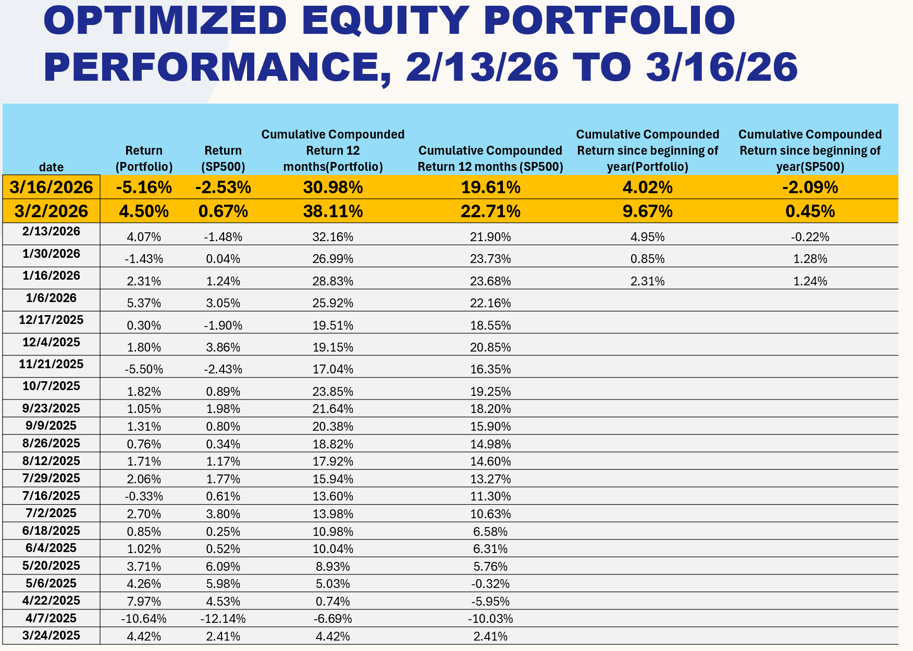
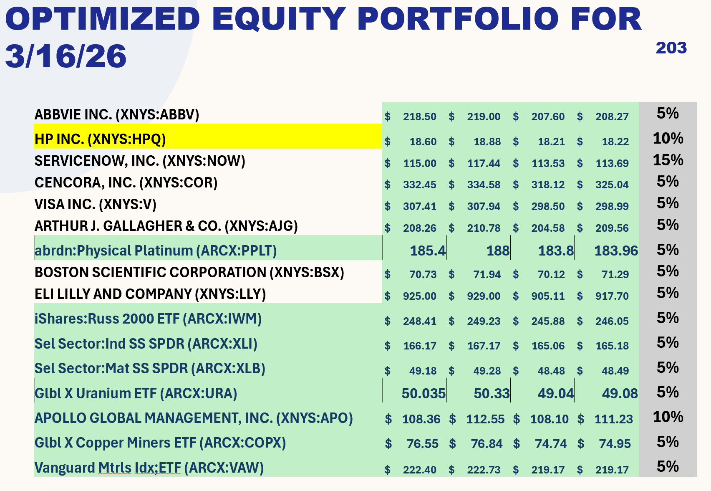

Data-Driven Insights for Smarter Investing and AI Models that Help Predict Directions
richcorreia.cfa@correiainvestmentsolutions.comExpand your financial knowledge with our YouTube channel — featuring in-depth videos on investing strategies, financial analysis, and market insights to help you make more informed investment decisions.
Visit Our YouTube Channel →Ask detailed financial questions using structured prompts powered by AI. Enter your question below and generate a professional-grade prompt you can use in ChatGPT.
The results displayed below are generated by a proprietary AI model built on the principles of fundamental analysis, trained and evaluated on quarterly financial data from S&P 500 companies. The model incorporates a comprehensive set of financial variables including net income, sales and revenue, gross and net margins, return on assets (ROA), return on equity (ROE), capital expenditures, and research and development investments — along with the three-year rate of change for each of these metrics to capture meaningful trends over time. Valuation multiples such as price-to-earnings (PE) and price-to-sales (PS) ratios are also factored in, alongside industry-level rankings and cross-industry comparisons to contextualize each company's relative financial standing. In addition to these fundamental inputs, the model employs a Cash Flow to Equity (FCFE) valuation framework combined with Monte Carlo simulations to generate probabilistic estimates of future price levels, accounting for uncertainty across a range of possible outcomes. Two forward-looking price targets are produced for each security: Horizon 1 (H1), which looks approximately 3 months ahead, and Horizon 2 (H2), which extends to roughly 6 months — both measured from an entry point that falls approximately 2 months after the official close of each quarterly reporting period. The charts below visualize how closely the model's predictions aligned with actual realized prices in historical periods, and include a confidence band representing one standard deviation around the predicted values to illustrate the range of expected outcomes. For the most recent quarters, the charts also project what the model anticipates for future price levels, offering a forward-looking perspective grounded in rigorous quantitative analysis.
The securities listed below represent our current selections derived from the AI-driven fundamental analysis model. These picks have been evaluated across all key financial metrics and are intended to be held throughout the second quarter. Each selection reflects a high-conviction opportunity identified through the model's rigorous quantitative screening process.
The portfolios displayed below are constructed using a sophisticated combination of technical indicators and macroeconomic variables, layered on top of a purpose-built AI model designed to optimize portfolio performance over a rolling two-to-four week forward horizon. The strategy draws from a broad set of macroeconomic signals — including interest rates, inflation trends, economic growth indicators, and sector rotation dynamics — alongside technical signals such as momentum, moving averages, and volatility measures, to identify the most favorable asset allocations at any given point in time. While the core universe of securities analyzed consists of S&P 500 companies, making the S&P 500 index the natural performance benchmark, the portfolio also extends its reach into other asset classes including commodities and international equity regions, with the objective of reducing overall portfolio volatility while simultaneously enhancing returns through broader diversification. The overarching performance goal is to deliver returns that are at least 2x those of the S&P 500 on a risk-adjusted basis, by capitalizing on short-to-medium term mispricings and momentum opportunities that traditional passive strategies are unable to exploit. To achieve this, portfolio allocations are actively reviewed and rebalanced on a monthly basis, ensuring that the weightings remain aligned with the latest signals produced by the AI model and reflect any meaningful shifts in the underlying macroeconomic or technical landscape. This disciplined, data-driven approach to portfolio construction seeks to deliver consistent outperformance while maintaining a clear and transparent framework that investors can follow and understand.
Returns — March 11, 2026

Portfolio — March 12, 2026

The spreadsheet available for download below is a comprehensive financial planning tool designed to take you from simple to complex financial analysis — giving you a clear picture of where you stand today and what the future may hold based on the specific actions and decisions you make along the way. Built with flexibility at its core, the tool allows you to construct multiple financial scenarios and evaluate how different choices — such as changes in savings rate, investment returns, retirement age, or spending habits — can dramatically alter your long-term financial outcomes. Whether you are just starting to plan for retirement or are already in the later stages of your career, the model adapts to your situation and projects forward with precision. It places particular emphasis on the outer years of retirement, where the compounding effects of early decisions become most apparent and where financial security matters most. Simply input your current financial details, define your assumptions, and let the model do the rest — giving you the clarity and confidence to make better financial decisions today for a more secure tomorrow. The .xlsm file requires macros to be enabled in MS Excel for it to run properly.
⬇️ Download Retirement Analysis SpreadsheetSelect a sheet below to preview its contents directly on this page.
Click a sheet tab above to preview it here.